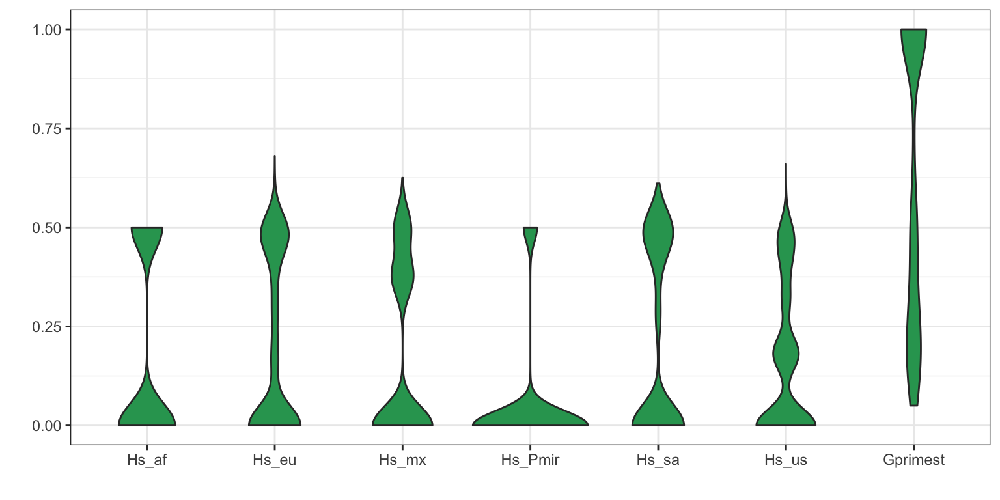

A fundamental question to most population studies is whether populations are diverse and whether this diversity is shared among the populations? To address the question of within population diversity geneticists typically report heterozygosity. This is the probability that two alleles randomly chosen from a population will be different. Ecologists may know this as Simpson’s Index (Simpson 1949). To address differentiation population geneticists typically utilize \(F_{ST}\) or one of its analogues. Population differentiation measured by \(F_{ST}\) was originally proposed by Sewall Wright (Wright 1949). This was later extended to a method based of diversity by Masatoshi Nei (Nei 1973). As researchers applied these metrics to microsatellites, genetic markers with a large number of alleles, it became clear that Nei’s measure would not correctly range from zero to one, so Philip Hedrick proposed a correction (Hedrick 2005). More recently, Lou Jost proposed another alternative (Jost 2008). You can tell a topic is popular when so many variants of it are generated. And there are more variants than I’ve mentioned here. A nice discussion as to which measure may be appropriate for your data was posted to the Molecular Ecologist blog titled should I use \(F_{ST}\), \(G_{ST}\) or \(D\)?.
In vcfR I’ve implemented the function
genetic_diff() to measure population diversity and
differentiation. Because VCF data typically do not include population
information we’ll have to supply it as a factor. The method ‘nei’
employed here is based on the methods reported by Hedrick (Hedrick 2005). The exception is that the
heterozygosities are weighted by the number of alleles observed in each
population. This was inspired by hierfstat::pairwise.fst()
which uses the number of individuals observed in each population to
weight the heterozygosities. By using the number of alleles observed
instead of the number of individuals we remove an assumption about how
many alleles each individual may contribute. That is, we should be able
to accomodate samples of mixed ploidy.
library(vcfR)
data(vcfR_example)
pop <- as.factor(c("us", "eu", "us", "af", "eu", "us", "mx", "eu", "eu", "sa", "mx", "sa", "us", "sa", "Pmir", "us", "eu", "eu"))
myDiff <- genetic_diff(vcf, pops = pop, method = 'nei')
knitr::kable(head(myDiff[,1:15]))| CHROM | POS | Hs_af | Hs_eu | Hs_mx | Hs_Pmir | Hs_sa | Hs_us | Ht | n_af | n_eu | n_mx | n_Pmir | n_sa | n_us |
|---|---|---|---|---|---|---|---|---|---|---|---|---|---|---|
| Supercontig_1.50 | 2 | 0 | 0.0 | 0.000 | 0.5 | 0.000 | 0.00 | 0.0798611 | 2 | 4 | 4 | 2 | 4 | 8 |
| Supercontig_1.50 | 246 | NaN | 0.0 | 0.375 | NaN | 0.000 | 0.50 | 0.3512397 | 0 | 4 | 4 | 0 | 6 | 8 |
| Supercontig_1.50 | 549 | NaN | 0.0 | NaN | NaN | NaN | 0.50 | 0.4444444 | 0 | 2 | 0 | 0 | 0 | 4 |
| Supercontig_1.50 | 668 | NaN | 0.5 | 0.000 | NaN | 0.000 | 0.50 | 0.5000000 | 0 | 4 | 2 | 0 | 2 | 8 |
| Supercontig_1.50 | 765 | 0 | 0.0 | 0.000 | 0.0 | 0.000 | 0.00 | 0.1107266 | 2 | 12 | 4 | 2 | 4 | 10 |
| Supercontig_1.50 | 780 | 0 | 0.0 | 0.000 | 0.0 | 0.375 | 0.18 | 0.1244444 | 2 | 8 | 4 | 2 | 4 | 10 |
The function returns the chromosome and position of each variant as provided in the VCF data. This should allow you to align its output with the VCF data. The heterozygosities for each population are reported as well as the total heterozygosity, followed by the number of alleles observed in each population. Note that in some populations zero alleles were observed. Populations with zero alleles reported heterozygosities of ‘NaN’ because of this absence of data.
knitr::kable(head(myDiff[,16:19]))| Gst | Htmax | Gstmax | Gprimest |
|---|---|---|---|
| 0.4782609 | 0.7951389 | 0.9475983 | 0.5047085 |
| NaN | 0.8057851 | NaN | NaN |
| NaN | 0.6666667 | NaN | NaN |
| NaN | 0.8125000 | NaN | NaN |
| 1.0000000 | 0.7543253 | 1.0000000 | 1.0000000 |
| 0.1160714 | 0.8000000 | 0.8625000 | 0.1345756 |
The remaining columns contain \(G_{ST}\), the maximum heterozygosity, the maximum \(G_{ST}\) and finally \(G'_{ST}\). The maximum heterozygosity and the maximum \(G_{ST}\) are intermediary values used to calculate \(G'_{ST}\). They are typically not reported but provide values to help validate that \(G'_{ST}\) was calculated correctly. Note that the populations that had zero alleles and therefore a heterozygosity of ‘NaN’ contributed to \(G_{ST}\)s that were also ‘NaN’. To avoid this you may want to consider omitting populations with a small sample size or that contain a large amount of missing data.
We now have information for each variant in the VCF data. Because this is typically a large quantity of information, we’ll want to summarize it. One way is to take averages of the data.
knitr::kable(round(colMeans(myDiff[,c(3:9,16,19)], na.rm = TRUE), digits = 3))| x | |
|---|---|
| Hs_af | 0.176 |
| Hs_eu | 0.188 |
| Hs_mx | 0.168 |
| Hs_Pmir | 0.052 |
| Hs_sa | 0.198 |
| Hs_us | 0.155 |
| Ht | 0.247 |
| Gst | 0.595 |
| Gprimest | 0.632 |
Another way to summarize data is to use violin plots.
library(reshape2)
library(ggplot2)
dpf <- melt(myDiff[,c(3:8,19)], varnames=c('Index', 'Sample'), value.name = 'Depth', na.rm=TRUE)## No id variables; using all as measure variablesp <- ggplot(dpf, aes(x=variable, y=Depth)) + geom_violin(fill="#2ca25f", adjust = 1.2)
p <- p + xlab("")
p <- p + ylab("")
p <- p + theme_bw()
p
Copyright © 2017, 2018 Brian J. Knaus. All rights reserved.
USDA Agricultural Research Service, Horticultural Crops Research Lab.